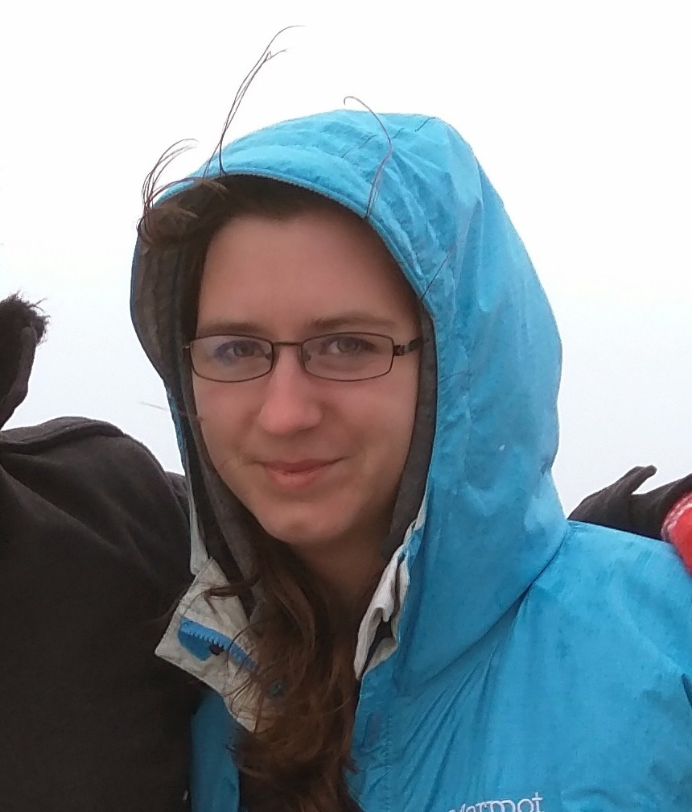

Student
| Chen,
Wei-Te Specialization / Interests: Semantic Parsing, Machine Translation, Semantic Role Labelling, Annotation Tool Design | |
| Lonnon,
Daryl Specialization / Interests: NLP, Machine Learning, Information Extraction for clinical data | |
 |
Myers, Skatje Specialization / Interests: NLP, machine learning |
| Poursabzi-Sangdeh,
Forough Specialization / Interests: NLP, machine learning, interacting with humans for improving machine learning and NLP algorithms |
|
| Stowe, Kevin Specialization / Interests: Computational semantics, machine learning, metaphor detection and interpretation, NLP for social media |
|
|
|
Verma, Sudha Specialization / Interests: NLP, Web/Social Media, Information Extraction for crisis events |
| Suresh, Abhijit Specialization / Interests: Cognitive Artificial Intelligence (Interdisciplinary) |
|
| Sultan, Arafat Specialization / Interests: |
|
| Endicott, James Specialization / Interests: |
|
| Endicott, James Specialization / Interests: |
|
| Gung, James Specialization / Interests: |
|
| Peterson, Daniel Specialization / Interests: |
|
| O Gorman, Tim Specialization / Interests: |
|
| Foland, Bill Specialization / Interests: |
|
| Dronen, Nicholas Specialization / Interests: |
|
| Kazeminejad, Ghazaleh Specialization / Interests: |
|
| Grissom, Alvin II Specialization / Interests: |
|
| Rodriguez, Pedro Specialization / Interests: |
|
| Liu, Ling Specialization / Interests: |
|
| Hao, Shudong Specialization / Interests: |
|
| Wadhawan, Kahini Specialization / Interests: |